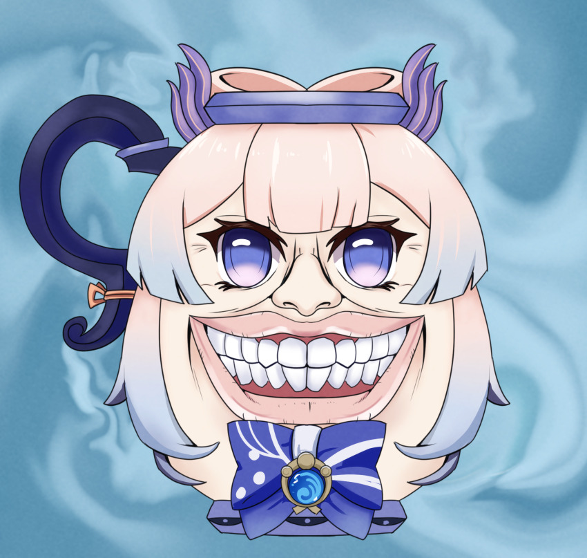
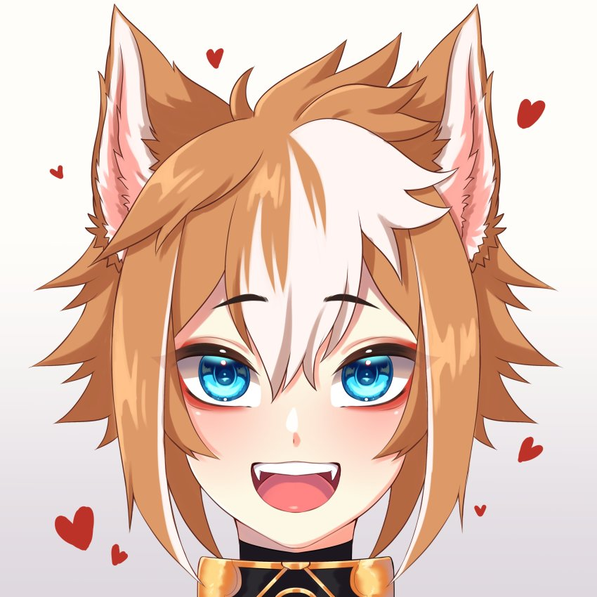

As Recalcadas
Sangonomiya Kokomi
-Uma Bagre mocréia recalcada com cheiro de bacalhau
que morre de inveja da nossa rainha Baal
e lidera um exército de recalcados contra ela.
Gorou
-Um vira-lata verminoso redículo que faz de tudo para agradar a Bagre fedorenta,
morre de inveja de madame Baal por ela ser perfeita e ele um verme.

